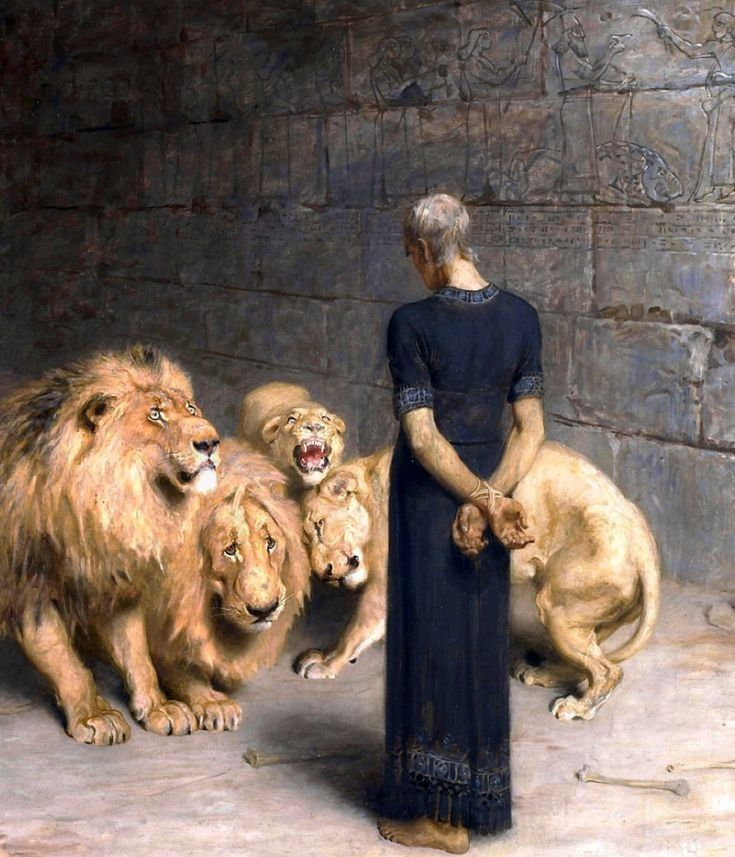
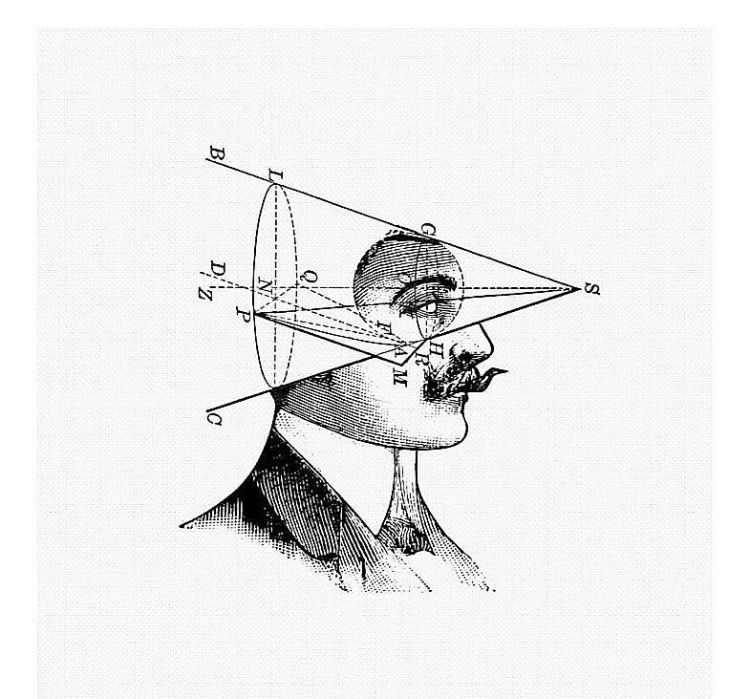

Selected works
© 2022 — 2026
Experiments, hackathon winners and production builds — each one shipped, not just sketched.
( Scroll )
/01 — Web · Product
Joins
Turkish live quiz platform — interactive knowledge games, built as a team.
joins.tr ↗
/02 — Algorand · Mobile
BLAZR
Micro-investment app on Algorand — 2nd place, ALGOHACK Open Innovation Track.
LinkedIn ↗
/04 — 5G · Security
CENK Project
Active security research on 5G infrastructure. Details remain confidential.
2026 · In progress
( Work index )
Currently building: CENK — 5G security research, confidential
Joins2023 · Web
BLAZR2023 · Algorand #2
Payper2026 · Web
CENK Project2026 · In progress